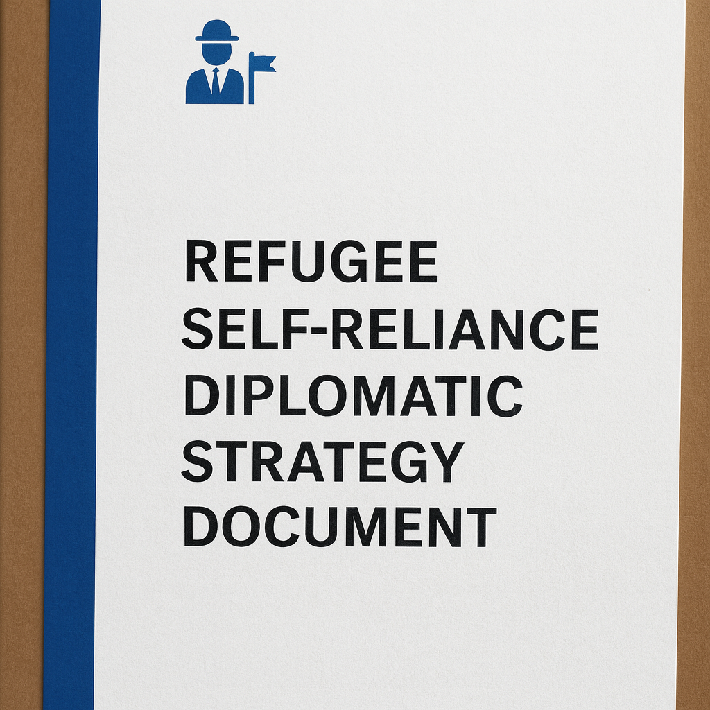

Your Excellency,
I would be grateful if you could spare a brief moment to review a concise presentation on supporting children with disabilities and pathways to refugee self-reliance. With your kind permission, I would be honored to deliver a brief, five-minute overview. This initiative has reached preliminary consideration at GIZ (Germany) and is under future review at SIDA (Sweden), underscoring its alignment with global priorities in ethical technology and inclusive development. A world-first humanitarian AI model, designed not to compete with Big Tech, but to protect children with disabilities and empower refugees — capable of being proven scalable in the field with only USD 1,000.
🇯🇵 倫理的AIは、日本の人道支援の強みである「海外現地での支援」と「技術協力」を融合し、難民が自ら生活を支えられる仕組みを構築します。倫理的AIによる自立支援は、日本のODAと国際協力方針に完全に合致する革新的モデルです。 🇫🇷 Aucun pays n’a encore pris l’ascendant dans le domaine de l’IA éthique.
AI Necklace for Child Safety – A Refugee Self-Reliance Model for Children with Disabilities
(The World’s First Concept of Ethical AI in Humanitarian Protection)
Prepared by: Gyu-min Jeon, Republic of Korea | Date: Initiated 2020 – Finalized 2025
1. Purpose and Core Concept
This initiative introduces a novel, life-saving technology—the AI Necklace for Child Safety—explicitly designed to protect children with developmental and physical disabilities in refugee and resource-constrained environments. It is the first known humanitarian project globally to operationalize ethical AI as its central design principle, functioning entirely offline, collecting no personal data, and prioritizing human dignity over commercial gain.
The AI Necklace not only provides real-time safety interventions for vulnerable children, but also forms the basis for a refugee self-reliance model. Within camp settings, refugees themselves assemble the devices, thereby creating local livelihoods and embedding sustainable, community-based production.
2. Humanitarian Need and Urgency
Children with developmental disabilities face disproportionate risks in displacement contexts—wandering into unsafe areas, encountering traffic hazards, or experiencing crises without the ability to call for help. In emergencies, minutes can mean the difference between safety and tragedy.
Conventional aid programs often lack dedicated tools to address this gap. This initiative delivers a scalable, low-cost intervention that is immediately actionable: a functioning Minimum Viable Product (MVP) can be developed for approximately USD 1,000, a cost fully covered by the proposer without financial commitment from partner institutions.
3. Technical Approach
Form Factor: Lightweight necklace with integrated sensors.
Core Functions: Detects sudden movement, road proximity, and abnormal physiological signs; issues child-friendly voice prompts in real time.
Architecture: Edge-based AI inference performed entirely on-device; no internet or cloud dependency.
Ease of Assembly: Requires only a few 14-nm chips and simple circuitry; assembly feasible within a refugee tent.
Training: Refugees can be taught the assembly process in under two hours, enabling immediate income generation.
4. Strategic Alignment
The initiative directly supports multiple UN Sustainable Development Goals (SDGs), including:
Goal 3: Good Health and Well-Being
Goal 4: Quality Education
Goal 9: Industry, Innovation, and Infrastructure
Goal 10: Reduced Inequalities
Goal 11: Sustainable Cities and Communities
Goal 17: Partnerships for the Goals
It complements global humanitarian strategies by shifting refugees from passive recipients to active producers, enhancing dignity and reducing aid dependency.
5. Ethical and Compliance Framework
Privacy: Compliant with GDPR and COPPA; zero personal data collection.
Design Philosophy: Human-centric AI prioritizing safety, trust, and inclusivity.
Scalability: Applicable beyond refugee settings, including in low-resource urban and rural communities.
6. Partnership Opportunities and Next Steps
Potential collaborations could include:
Pilot Deployment: Launch in a selected refugee settlement to test technical and social feasibility.
Policy Integration: Position the AI Necklace model within national disability protection frameworks and humanitarian action plans.
Capacity Building: Train local refugees in assembly, maintenance, and distribution.
The proposer invites interested diplomatic missions, UN agencies, and NGOs to review the 12-page executive summary (AINecklace_Summary_Korea.pdf) and explore further engagement. A 260-page technical dossier is also available upon request, containing full specifications, risk-mitigation plans, and deployment simulations.
Closing Statement
This is not a conceptual aspiration but a fully realizable, rights-based technology—the world’s first to combine ethical AI with a refugee-driven production model for the direct protection of children with disabilities. With minimal investment and strong international cooperation, it can become a replicable blueprint for safeguarding the most vulnerable while fostering self-reliance in displaced communities.
12-Page Executive Summary (AINecklace_Summary_Korea.pdf)
The summary document is available for your kind review via the following link:
View on Google Drive
This summary contains no active content, embedded links, or commercial elements. It outlines an ethics-based AI technology—the world’s first concept integrating humanitarian protection and refugee self-reliance for children with disabilities. Your review of this document, preferably on a desktop device to fully appreciate its layout and content, would be most sincerely appreciated.
Your Excellency,
Hunger among refugees stems not from a lack of food, but from a lack of purchasing power.
Remove this single bottleneck, and the pathway to solutions opens.
I stand ready to present the most cost‑efficient and reliable remedy.
Demand will, without question, outpace supply. As refugees are enabled to purchase food and medicines with their own resources,
investment by the private sector in refugee settlements will follow.
By awarding an ethical certification mark to participating enterprises,
Europe can reduce traditional aid while more effectively advancing refugee self‑reliance.
What matters more than benevolent assistance is building self‑reliance within camps.
The use of ethical AI(AI Necklace for Child Safety) to enable refugee self‑reliance constitutes a
world‑first concept.
🇫🇷 L'utilisation de l'IA éthique (AI Necklace for Child Safety) pour permettre l'autonomie des réfugiés constitue un concept inédit au monde. Dans le domaine de l'IA éthique, aucun pays, y compris les États-Unis et la Chine, ne l'a encore dominé. Avec un soutien de 1 000 dollars, il est possible de tester l’autonomie des réfugiés grâce à l’IA éthique. L’IA éthique n’est pas centrée sur la technologie, mais sur l’humain. Ainsi, elle peut être mise en œuvre de manière prioritaire à un coût bien inférieur à celui des IA traditionnelles axées sur la technologie. Cela signifie qu’il n’existe actuellement aucun concurrent dans ce domaine.
M Corp AI — Public Interest Message + Impact Simulator
Not for Profit. Not for Data. Built for Dignity
We have prepared a PDF strategy document to support self-reliance within refugee camps.
Depending on circumstances, this plan could enable up to one million refugees to achieve self-reliance
inside the camps within five years. The PDF file can be sent to you by email.
Here, “self-reliance” refers not to external migration, but to sustainable livelihoods within the camps themselves.
Email: gyumin.jeon.childsafe@gmail.com
Refugee Calculator
ΔT1.55°C
Every 0.1 °C increase may correspond to 0–0 people/year additionally displaced (vs 1.55 °C baseline). Cumulative since 1.55 °C: 0–0 people/year. Wheat yield change (vs 1.55 °C): 0.00%.
[ Projected displacement at current temperature ] The number of refugees will increase to an unmanageable extent, and no country on earth will be able to bear such a burden. Without self-reliance, refugee communities will face heightened risks of unrest, conflict, and instability. Enabling refugees to achieve self-reliance is therefore essential, and fostering such self-sufficiency within refugee settlements represents the highest standard of refugee policy. At present, Europe and the United States bear part of the responsibility, but no country is free from the challenges of refugees. This is equally true for Japan and for Korea. There are clear limits to charitable aid. The world cannot simply pour unlimited taxpayer money into supporting refugees, as the citizens of those countries would strongly oppose such measures.
After 1 year:0–0
After 2 years:0–0
After 3 years:0–0
2024 has been confirmed as the first year when the global annual average temperature exceeded about 1.55 °C above pre-industrial levels. This calculator uses 1.55 °C as the baseline and displays only the additional warming beyond that point. Because risks can rise nonlinearly, the model applies a curve in which impacts accelerate as temperature increases.
Figures are educational estimates, calibrated to peer-reviewed research, and presented as both a conservative lower bound and an aggressive upper bound. More than 100 million people are currently forcibly displaced worldwide, underscoring the essential need for self-reliance and livelihoods within refugee settlements. This calculator follows the official analyses of Copernicus and the World Meteorological Organization.

A rights-based wearable AI initiative for children with disabilities and displaced communities
Food has never been in absolute shortage. Indeed, crops such as maize are often diverted to livestock feed and bioenergy production. The challenge is not the global supply of food, but the absence of accessible provisions for refugees. Self-reliance within refugee camps is therefore imperative. Humanitarian aid, while vital, has inherent limits. A concerted effort is needed to encourage substantial investment in refugee settlements by a wide range of enterprises, coupled with the promotion of ethical certification to ensure that such engagement upholds the highest humanitarian and human rights standards.
All contents of this message may be freely shared.
I hope this message finds you well.
I am an independent public-interest technologist based in the Republic of Korea, currently leading a humanitarian initiative that brings together disability-inclusive design, refugee-led manufacturing, and ecological self-reliance. This is not simply a technology pilot—it is a rights-based model that integrates ethical AI, digital inclusion, and community-driven sustainability in fragile and low-resource contexts.
To avoid email filters, I am providing an overview through dedicated domains rather than file attachments. The following platform structure has already been secured and will be developed in phases:
M Corp aspires to become a more ethically grounded certification framework than the B Corp model.
The name stands for Morgan J. Refugee Self-Reliance Cooperative, with “Morgan J” being a simplified international rendering of my Korean name, Jeon Gyu-min. By putting my name on this initiative, I assume full personal responsibility for its integrity, accountability, and long-term execution.
The project is anchored in three core domains:
A. www.mcorp-ai.com
This nonprofit platform provides interest-free $1,000 microloans to refugees who voluntarily participate in localized AI assembly efforts. With this funding, they can establish tent-based production spaces to assemble wearable AI safety devices for children with disabilities. The platform directly links refugee livelihoods with meaningful, decentralized manufacturing.
B. www.mcorpai.org
This is the central public-interest site dedicated to the AI Safety Necklace—an offline, data-free wearable device that provides audio guidance and alerts to support children with developmental and physical disabilities. The site will host technical documentation, ethical design principles, and online ordering in future phases. It serves as the moral and informational core of the initiative.
C. www.mcorp.ai.kr
A Korean-language portal that will engage domestic stakeholders, including angel investors and ESG-oriented companies. This site will function as a national hub for communication, advocacy, and public participation in the refugee self-reliance program.
Note: www.mcorpai.com is an unrelated domain and not affiliated with this initiative.
This initiative is closely aligned with your institution’s work in digital inclusion, community-based resilience, and technology-for-refugees programming. We are fully prepared to engage in conversations with partner institutions interested in co-developing and piloting this model through joint implementation or technical support.
This is not a charitable campaign.
It is a scalable public-interest ecosystem that combines offline AI safety tools, cooperative refugee employment, zero-interest capital access, ecological infrastructure, and ethical wealth redistribution. All technology is designed to function without internet access, collects no personal data, and adheres to international standards including the GDPR, SDGs, and the Social and Solidarity Economy (SSE) framework.
We warmly welcome any form of collaboration—strategic, technical, or operational. Further details can be transparently accessed and shared through the domains listed above.
Respectfully,
Gyu-min Jeon (also known as Morgan J.)
I was born on January 17, 1982.
I am currently residing in Daejeon, Republic of Korea, and I am employed at Hanbat National University.
Email: gyumin.jeon.childsafe@gmail.com
My backup email is jekymin2@naver.com
As I am not fully fluent in English, I kindly request that all responses be made in writing, preferably via email.
Supporting refugees is not merely an act of charity, but a shared responsibility of the global community. Refugees are not passive recipients of aid—they are potential economic actors capable of contributing meaningfully to the communities in which they live. We firmly believe that the true path to support lies in building ecosystems that enable self-reliance, dignity, and long-term opportunity. With this conviction, I trust that ethical investors and collaborative partners dedicated to refugee self-sufficiency can be found across the world, and I look forward to engaging with them in solidarity and shared purpose.
M‑Corp Impact Simulator — "$1,000 Tent Factory"
All calculations run in your browser only. No data is sent anywhere.
🔒 Zero‑data, in‑browser
How wages and family dividends work
If a refugee participates, they receive $300 per month as income.
In addition, a share of net profit (default 50%) is paid to the worker’s family or relatives as dividends at $50 per household per month.
Example: With one tent and 4 workers, all 4 workers receive $300 per month each, and their family/relatives receive $50 per household per month from the dividend pool.
Adjust any value to match local reality. Mix, costs, and population are configurable.
Total workers
—
Total units
—
Revenue
$0
Wage pool
$0
Wage coverage vs 10% of sales: —
Dividend pool
$0
Beneficiary households: —
Reinvestment and loan
—
Reinvestment: $0
GDP per capita (monthly)
$0
GDP per capita (annual)
$0
Avg. per participating worker (monthly)
$0
Product mix and costs
Cumulative financials
test prompt
Click the button to copy a prompt pre‑filled with current simulation values.
Diplomatic Notice
We stand ready to provide the Refugee-Camp Self-Reliance Model for your institution’s review in PDF format at any time.
Should you wish to receive the dossier, we would be grateful to receive a written request by email.
Summary Report on Maize and Grain Rationing in Refugee Settlements – Based on WFP and UNHCR Public Data
First, regarding the overall situation. Over the past two to three years, persistent funding shortfalls have led to extensive reductions in food assistance for refugees, with distribution rates in many locations falling to less than half of recommended daily intake. In Kenya’s major settlements of Dadaab and Kakuma, ration levels dropped below fifty percent between 2024 and 2025, and in some cases cash transfers were halted entirely. According to UNHCR summaries, the World Food Programme (WFP) has reported a funding gap of approximately seventy-two percent for its refugee operations over a six-month horizon, resulting in direct and widespread ration cuts across most camps.
Second, on specific regional cases. In Kenya, as of June 2025, monthly food support for approximately 720,000 refugees had declined to around twenty-eight percent of recommended levels, with cash transfers facing imminent suspension. Reports from the same period indicate that in Kakuma rations were halved, while the Dadaab cluster saw step-wise reductions from eighty percent in 2023 to fifty percent in 2024. In Uganda, funding shortages in 2025 led to ration levels of about forty percent, and the United Nations warned that without additional resources further cuts would be unavoidable.
Third, on the structural causes of maize shortfalls. The problem does not lie in insufficient global production, but rather in the inability to reach camps due to conflict, insecurity, logistical constraints, and inadequate storage capacity. The most immediate driver is funding scarcity: between 2023 and 2025, WFP progressively reduced both beneficiary numbers and ration sizes across major programmes. When cash voucher values are cut and market prices surge, the actual volume of grain purchased—whether maize, rice, or pulses—falls even further.
Fourth, additional comparative cases. In Bangladesh’s Cox’s Bazar, home to Rohingya refugees, the value of food e-vouchers was reduced in 2023 from twelve to eight dollars per month, significantly reducing purchasing power for staples such as rice and maize products. In Chad and parts of East Africa, WFP and UNHCR have announced similar ration cutbacks and issued urgent appeals for supplemental funding.
Fifth, practical implications. The bottlenecks lie not in “production” but in “access” and “resources.” Ensuring stable procurement channels for maize and other grains, investing in low-cost transport solutions, and expanding local storage infrastructure are essential, alongside diversifying the funding base for rations. When cash transfers cease, intake of protein and fats drops sharply, making it critical to pair reduced grain distributions with nutrition supplements and packages of oil and legumes. In the short term, emergency funding is vital; in the medium term, livelihood and self-reliance models within camps should be advanced to mitigate ration volatility. This approach is consistent with the WFP and FAO “hunger hotspot” alerts.
In conclusion, maize and other grain ration shortages in refugee settlements stem not from a global lack of production, but from deficits in funding and access. Verified cases in Kenya, Uganda, and elsewhere show distribution rates falling below fifty percent. Stable financing, reliable logistics, and parallel self-reliance initiatives are essential to protect food security for displaced populations.
If you would like, I can also prepare this in a formal briefing note format with executive summary and bullet-pointed “recommendations” so it can be inserted directly into a diplomatic or UN-level communication. That would make it more actionable in policy contexts.
Public‑interest message – profile block update
EN The AI Necklace for children with disabilities — an ethical‑AI approach — has not yet been led by either the United States or China. If this is not an immediate priority for your Ministry, I would be grateful if you could connect me with an appropriate NGO. Ethical AI can be implemented with as little as USD 1,000.
FR Le collier d’IA pour enfants en situation de handicap — une approche d’IA éthique — n’est encore dominé ni par les États‑Unis ni par la Chine. Si cela ne relève pas des priorités immédiates de votre ministère, je vous serais reconnaissant de me mettre en relation avec une ONG. Une IA éthique peut être mise en œuvre avec seulement 1 000 USD.
“I am a national of the Republic of Korea.” Gyu‑min Jeon (also known as Morgan J.). I was born on January 17, 1982.
This initiative is among the first of its kind worldwide. With an initial investment of USD 1,000, a pilot version can be launched. The proposal clearly demonstrates technical feasibility and financial accessibility, offering a scalable, verifiable model suitable for public‑sector adoption on an international scale.
This is a real‑world test to determine whether refugees can assemble the AI necklace for children with disabilities using just USD 1,000. The device itself requires only a few 14‑nanometer chips and one or two simple circuit assemblies. There is no need for a formal modular factory; a single refugee tent can serve as the assembly site. It is genuinely possible to establish a small‑scale assembly operation for USD 1,000.
This initiative aligns directly with the United Nations Sustainable Development Goals. In its ambition, impact, and humanitarian alignment, the initiative reflects the kind of public‑benefit innovation that merits diplomatic attention.
Is this really feasible? Yes, it is entirely feasible. The AI necklace for children with disabilities is built with a remarkably simple structure, making it straightforward to assemble. Even refugees with no technical background can carry out the work. With about two hours of basic training, any refugee can become self‑sufficient in assembling the device. Establishing a polished, modular factory would cost around USD 100,000; however, in a refugee settlement, all that is needed is a tent, a small set of semiconductor components, and necklace parts. As noted, a small‑scale assembly setup can be launched with USD 1,000.
Is there confidence in demand? Absolutely. The AI necklace combines a compelling founder story, clear public benefit, the objective of guaranteed child safety, refugee empowerment, and an opportunity for meaningful sponsorship. With this combination, demand is expected to exceed supply.
It is conceivable that a viable solution to the refugee challenge may, in certain instances, lie not with renowned international organizations such as UNICEF or the WFP, but with committed individuals. In this case, the resources required are modest: a mere USD 1,000, which I am prepared to provide personally, and the assistance of only three capable individuals to implement the initiative. Should even such a minimal and feasible request prove beyond one’s willingness to support, it would be difficult to reconcile such inaction with the principles of ethical diplomacy.